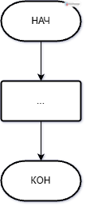
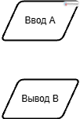
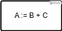
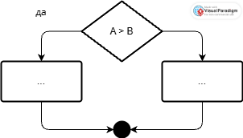
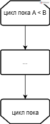

Упражнение №1. Блок-схемы алгоритмов
Задание 1
Дана блок-схема некоторого алгоритма. Выполните в ручную этот алгоритм для значений \(a=4\) и \(b=30\). Сообщите результат преподавателю, поясните что делает этот алгоритм, ответьте на вопросы преподавателя.
Задание 2
Для задачи своего варианта составьте блок-схему алгоритма решения задачи. Блок-схему создать с помощью ресурса https://online.visual-paradigm.com/, готовую блок-схему экспортировать в формат PDF и передать её своему напарнику для проверки корректности алгоритма.
Варианты заданий
- На шахматной доске каждая клетка определяется координатами — парой чисел от 1 до 8: первое число — номер вертикального ряда, второе — номер горизонтального ряда. Пользователь вводит координаты двух клеток. На первой клетке стоит чёрный слон, на второй — чёрная ладья. Вывести координаты всех свободных клеток, которые не находятся под боем указанных двух фигур. Рекомендация: для проверки того, находится ли клетка под боем фигуры, можно вычислить модуль разности соответствующих координат двух клеток, и далее проверять их в зависимости от типа фигуры.
- Вывести все «счастливые» номера (натуральные числа) из указанного пользователем диапазона шестизначных натуральных чисел \([a,b]\) (\(100000\leqslant a\leqslant b\leqslant 999999\)). «Счастливым» называется номер, у которого сумма первых трёх цифр равна сумме последних трёх цифр.
- На шахматной доске каждая клетка определяется координатами — парой чисел от 1 до 8: первое число — номер вертикального ряда, второе — номер горизонтального ряда. Пользователь вводит координаты двух клеток. На первой клетке стоит чёрная ладья, на второй — чёрный ферзь. Вывести координаты всех свободных клеток, которые не находятся под боем указанных двух фигур. Рекомендация: для проверки того, находится ли клетка под боем фигуры, можно вычислить модуль разности соответствующих координат двух клеток, и далее проверять их в зависимости от типа фигуры.
- Пользователь задаёт две даты, вводя шесть чисел: \(d_1\), \(m_1\), \(y_1\), \(d_2\), \(m_2\), \(y_2\). Числа \(d_1\) и \(d_2\) определют номер дня в месяце. Числа \(m_1\) и \(m_2\) определют номер месяца в году. Числа \(y_1\) и \(y_2\) определют номер года. Вывести количество дней между этими двумя датами (включая сами эти даты, например для дат 29 сентября 2009 и 2 октября 2009 количество дней равно 4; для дат 12 мая 2013 и 13 мая 2013 — 2 дня; а для дат 5 июля 2022 и 5 июля 2022 — 1 день). Учесть, что в диапазон может попасть високосный год, в котором в феврале 29 дней, а не 28, как в не високосные года. Год является високосным, если он делится нацело на 4. Но при этом, если год делится нацело на 100, он не является високосным. Но при этом, если год делится нацело на 400, он является високосным.
- Дана последовательность цифр:
101112...979899 (записанные подряд все двузначные числа, всего 180 цифр). Для каждого \(k\in[m;n]\), где \(1\leqslant m\leqslant n\leqslant 180\), определить, какая цифра в указанной последовательности стоит на \(k\)-ой позиции.
- В круг встали \(N\) детей для игры с мячом. Каждый ребёнок кидает мяч другому ребёнку, стоящему слева от него, пропуская \(K\) детей (\(K>1\)). Определить минимальное значение \(K\), при котором каждый ребёнок поучаствует в игре (получит мяч). Вывести последовательность номеров детей (начиная с 1), которые будут получать мяч.
- На шахматной доске каждая клетка определяется координатами — парой чисел от 1 до 8: первое число — номер вертикального ряда, второе — номер горизонтального ряда. Пользователь вводит координаты двух клеток. На первой клетке стоит чёрный слон, на второй — чёрный ферзь. Вывести координаты всех свободных клеток, которые не находятся под боем указанных двух фигур. Рекомендация: для проверки того, находится ли клетка под боем фигуры, можно вычислить модуль разности соответствующих координат двух клеток, и далее проверять их в зависимости от типа фигуры.
- Малышу на День рождения подарили \(N\) конфет. Потом к нему стали приходить гости по одному. Каждому пришедшему Малыш отдавал половину своих конфет. Если количество конфет нацело не делилось, то Малыш съедал оставшуюся конфету сам. Последним прилетел Карлсон и забрал оставшиеся конфеты. Вывести, сколько конфет съест каждый из гостей, включая Карлсона, и сколько конфет съест Малых, если за праздничным столом собралось \(М\) гостей. Числа \(N\) и \(M\) вводятся пользователем.
- На шахматной доске каждая клетка определяется координатами — парой чисел от 1 до 8: первое число — номер вертикального ряда, второе — номер горизонтального ряда. Пользователь вводит координаты двух клеток. На первой клетке стоит чёрная ладья, на второй — чёрный конь. Вывести координаты всех свободных клеток, которые не находятся под боем указанных двух фигур. Рекомендация: для проверки того, находится ли клетка под боем фигуры, можно вычислить модуль разности соответствующих координат двух клеток, и далее проверять их в зависимости от типа фигуры.
- Мама принесла домой \(N\) груш. Дети приходили из школы по одному. Каждый пришедший, считая себя первым, отсчитывал свою долю и уходил (если количество нацело не делилось, то остаток никто не брал). Определить сколько груш досталось каждому ребёнку, если у мамы \(K\) детей. Сколько груш осталось, когда ушел последний?
- Дана последовательность цифр:
100101102...997998999 (записанные подряд все трёхзначные числа, всего 2700 цифр). Для каждого \(k\in[m;n]\), где \(1\leqslant m\leqslant n\leqslant 2700\), определить, какая цифра в указанной последовательности стоит на \(k\)-ой позиции.
- На бесконечном клетчатом поле нарисована окружность радиуса \(R\) клеток, центр которой совпадает с узлом решетки. Подсчитать сколько целых клеток находится внутри окружности.
- На шахматной доске каждая клетка определяется координатами — парой чисел от 1 до 8: первое число — номер вертикального ряда, второе — номер горизонтального ряда. Пользователь вводит координаты двух клеток. На первой клетке стоит чёрный слон, на второй — чёрный конь. Вывести координаты всех свободных клеток, которые не находятся под боем указанных двух фигур. Рекомендация: для проверки того, находится ли клетка под боем фигуры, можно вычислить модуль разности соответствующих координат двух клеток, и далее проверять их в зависимости от типа фигуры.
- Для заданного пользователем числа \(N\) (\(1\leqslant N\leqslant 9\)) и диапазона \([A, B]\) (\(1\leqslant A\leqslant B\)) вывести все натуральные числа из этого диапазона цифровой код которого равен числу \(N\). Цифровой код числа находится следующим образом: вначале суммируются цифры, из которых состоит число, затем цифры найденной суммы и так до тех пор, пока не получится однозначное число. Это и есть цифровой код числа.
- На шахматной доске каждая клетка определяется координатами — парой чисел от 1 до 8: первое число — номер вертикального ряда, второе — номер горизонтального ряда. Пользователь вводит координаты двух клеток. На первой клетке стоит чёрный ферзь, на второй — чёрный конь. Вывести координаты всех свободных клеток, которые не находятся под боем указанных двух фигур. Рекомендация: для проверки того, находится ли клетка под боем фигуры, можно вычислить модуль разности соответствующих координат двух клеток, и далее проверять их в зависимости от типа фигуры.
Указания
Общая структура блок-схемы представлена на рисунке:

Ввод значений и вывод результатов обозначается элементами, представленными на рисунке:

Вычисление выражений обозначается элементом, представленным на рисунке:

При этом в выражении можно использовать различные математические операции: сложение (+), вычитание (−), умножение (*), деление (/), остаток от деления (mod), возведение в степень (функция pow), извлечения квадратного корня (функция sqrt) и др.
Ветвление обозначается элементом, представленным на рисунке:

Цикл обозначается элементом, представленном на рисунке:
